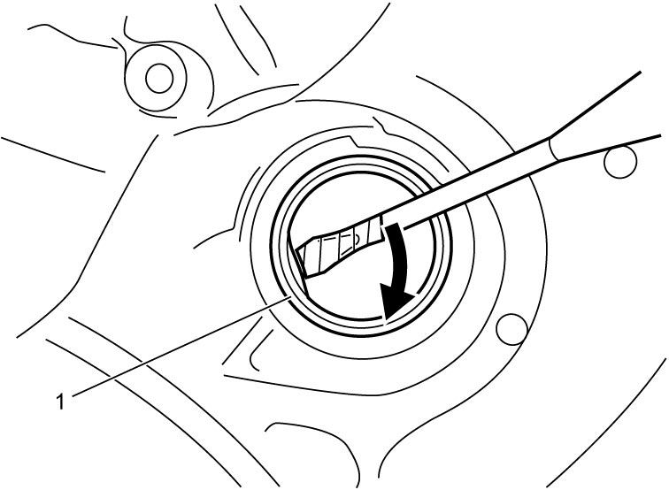
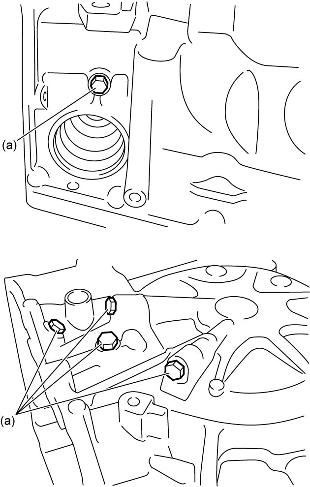
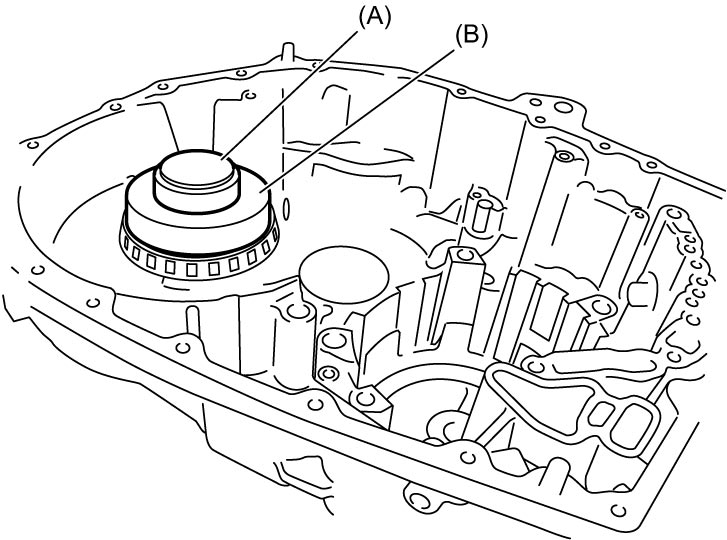
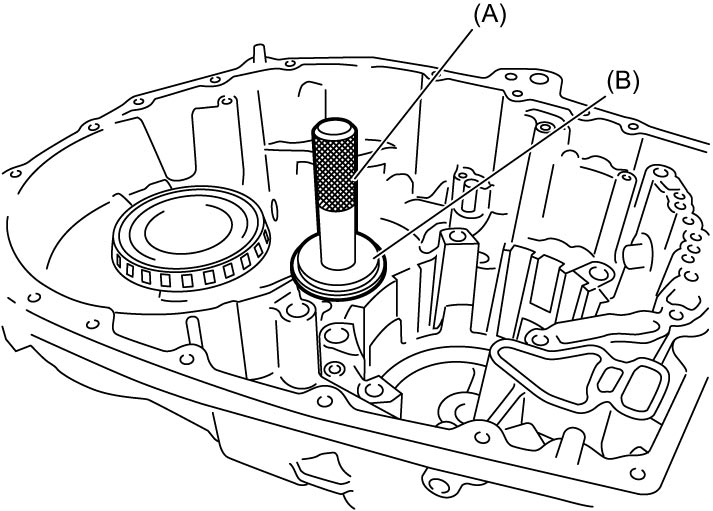

5A
| Transaxle Case Disassembly and Reassembly |
Disassembly
1)Remove differential side oil seal (1) using a flat-bladed screwdriver or the like.


 "Expand image")
2)Remove pinion and counter driven gear left taper roller bearing outer race (1) and shim using special tools.

 "Expand image")
3)Remove differential side left taper roller bearing (1) and shim using special tools.

 "Expand image")
4)Remove transaxle case plugs (1).

 "Expand image")
Reassembly
1)After applying ATF to new O-rings, fit them to transaxle case plugs. Then install plugs to transaxle case.

 "Expand image")
2)Using special tools, assemble shim and differential side left bearing.
NOTE:
Use shim with the same thickness as removed one.

 "Expand image")
3)Using special tools, install shim and pinion and counter driven gear left bearing outer race.
NOTE:
Use shim with the same thickness as removed one.

 "Expand image")
4)Using special tools, install new differential side oil seal to transaxle case evenly at specified position shown in figure.
Differential side oil seal installing depth
“a”: 2.6 – 3.6 mm (0.11 – 0.14 in.)
 "Expand image")